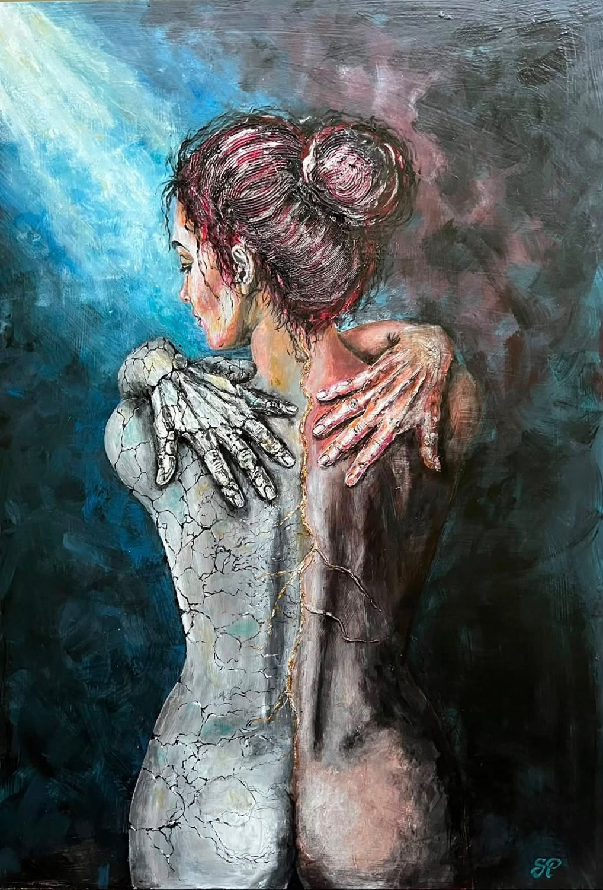

Lucrare
Tehnică
Dimensiuni
Disponibilitate
Preț
Vezi în detaliu
Sunt pictor autodidact. Pictez pentru că am ajuns la lucrurile pe care vreau să le spun.
Două colecții, două drumuri prin aceeași materie. Apasă pe o lucrare pentru a o vedea în detaliu.
Corpuri care se scufundă, se cristalizează sau se ridică din propria adâncime — un drum despre fragilitate și despre felul în care alegem să rămânem întregi.
Dacă în ALBASTRU corpul se transforma în piatră, aici piatra devine materie reală — se adună, strat cu strat, sau se desprinde și cade, direct pe suprafață, în relief. Lucrări construite în basorelief, cu pastă minerală și praf de marmură.

„Pictez pentru că am ajuns la lucrurile pe care vreau să le spun.”
Am descoperit pictura prea târziu pentru a o lua ușor. Sunt pictor autodidact și inginer de profesie. Am ajuns la pictură din nevoia de a înțelege și de a construi imaginea. M-am format singur, dar nu fără îndrumare: am studiat, am căutat profesori și am experimentat continuu.
La 63 de ani, nu mai pictez pentru a demonstra că pot deveni pictor. Pictez pentru că am ajuns la lucrurile pe care vreau să le spun. Unele lucruri nu trebuie începute devreme pentru a deveni esențiale.
Pictura mea este despre fragilitate, tensiune, urmele timpului și felul în care omul încearcă să rămână întreg atunci când viața îl fisurează.
Pentru prețul unei lucrări, disponibilitate sau o comandă personalizată, scrie-mi direct.